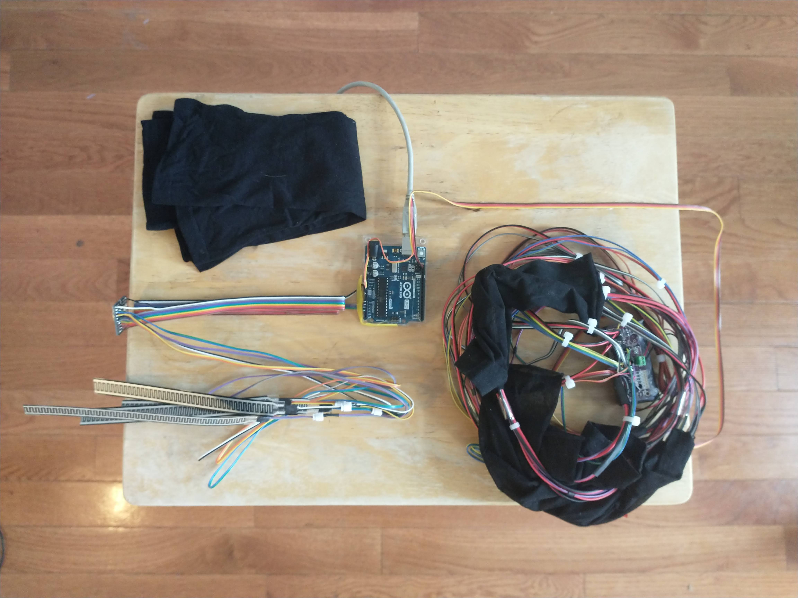
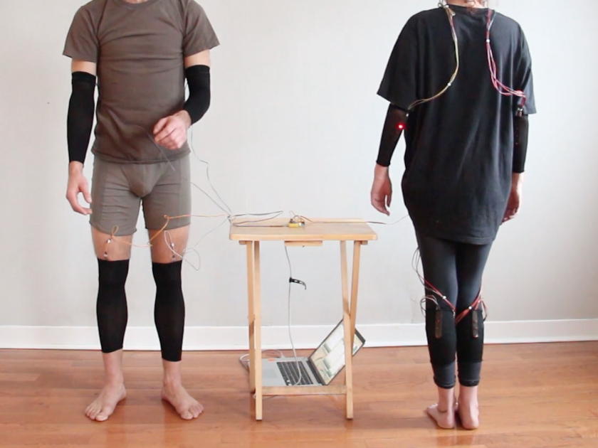
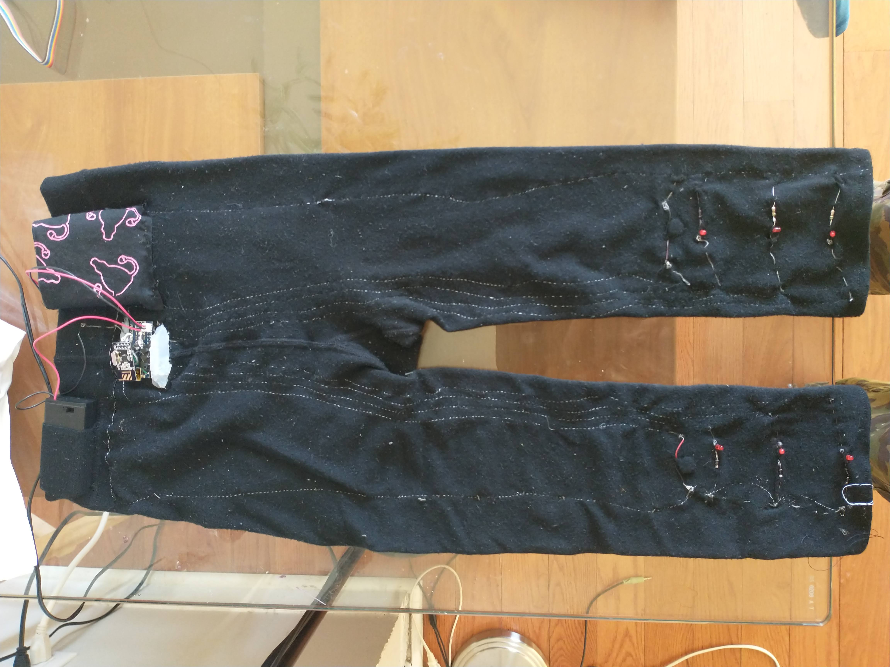
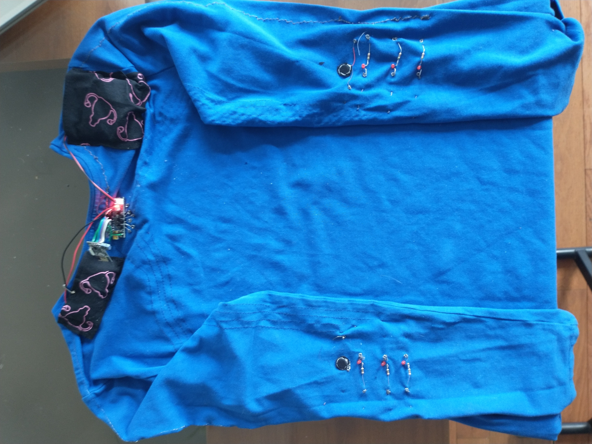

Somaphore is an ongoing exploration of intersubjectivity through performative electronic body art. This project draws inspiration from a range of sources, principally neurophenomenology, Marxist sociology, experimental theatre and performance art, to explore the role of technology in disembodiment, intersubjectivity and alienation. Aesthetically, Somaphore is driven by the relatively short but already deep history of interactive electronic, robotic and telematic body art, from artists such as Stelarc, ORLAN and Marcel.li Antunez Roca. Their descendants, the more recent wave of cyborgian bioart of which Moon Ribas and Neil Harbisson are the poster children, has much to admire technically, principally bold advances in body- and brain-computer interfacing. To me, however, there is an aspect of functional transhumanism to this 21st century cyborgism that falls conceptually flat, avoiding the complex question of the role of technology in contemporary alienation, both intersubjective and sociological, in favour of fostering an unreflective and individualistic technoartistic start-up culture. While the merit of this heading is mostly a matter of opinion, the desire to transcend one's own mortality and, by extension, bodily limitations risks correlating with a decreased motivation and/or ability to interact with other bodies. In this light it is interesting to note the difference between electronic performance artworks in which the artist body interacts with other bodies, whether physical as in Marcel.li Antunez Roca's Epizoo or virtual in Stelarc's Ping Body, as opposed to abstract phenomena, such as seismic activity for Moon Ribas or light frequencies for Neil Harbisson. However this is a rather crude generalization (readily available counterexample in Ribas and Harbisson's Bluetooth Tooth as well as the recent work of artists such as Kevin Warwick), that is not meant as a reactionary indictment, but rather as a gentle word of caution, speaking to a general societal trend towards interpersonal disembodiment, where interactions with our peers are becoming increasingly dematerialized.
With this in mind, this project is situated in the footsteps of early cyberelectronic body art steeped in physical performance art and in parallel with current cyberart boasting advanced biotechnological tools, attempting to harness the latter's techniques to deepen the former's exploration of the role of the body in intersubjectivity, with less of an interest in transcending our carnal limitations than in figuring out how those limitations shape our social behaviour, colour our interpersonal interactions and leave us teetering on the edge between alienation and belonging, commonality and otherness, as well as find tools to bridge this interindividual phenomenological gap.
Somaphore is a multifaceted exploratory project. The general concept involves mapping motion of one body onto another in an analogous fashion. While conceptually simple, mimicry is a form of embodied intersubjectivity that remains opaque, both philosophically and scientifically (for example, the contentious but metaphorically interesting notion of mirror neurons in the 90s neuroscientific literature) and provides a wealth of ideas for artistic exploration. A first prototype consisted in two wearable circuits, one containing an array of pressure sensors responding to bending and the other vibration motors, programmed so that joint-bending motion of the first would lead to sensorial experience of the second (as well as the visual experience of any viewers via LEDs). The next prototype sought to heighten the sensory experience by bringing the electronic elements closer to the body using a woven conductive thread circuit. A third prototype saw the addition of radiofrequency components, to allow for wireless communication between the wearers.
Building on the three prototypes, the next explorations involve developing better electronic hardware to enhance the sensory experience, broadening the interactivity from the current binary to a multiplicity of actors and reactors and testing different levels of constraint.
Somaphore 1.0 (2021)
 
Demo
Somaphore 2.0 (2021-2022)
 
Demo
Somaphore 3.0 (2022-2023)

In collaboration with Marianne Rouche & Emily Freeman-Lavoie.
Supported by the Canada Council of Arts.